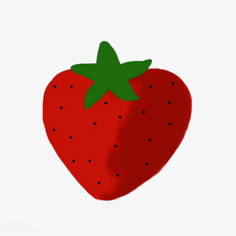

- Technically, it is an aggregate accessory fruit, meaning that the fleshy part is derived not from the plant's ovaries but from the receptacle that holds the ovaries.
- Strawberries are the first fruit to ripen each spring.
- There are 200 seeds on an average strawberry.
- The seeds can grow into new strawberry plants, but most instead reproduce through runners.
- They're an excellent source of vitamin C and manganese and also contain decent amounts of folate (vitamin B9) and potassium.
- Strawberries are very rich in antioxidants and plant compounds, which may have benefits for heart health and blood sugar control ( 1 , 2 ).
- Strawberries are believed to help reduce the risk of heart disease and certain cancers.